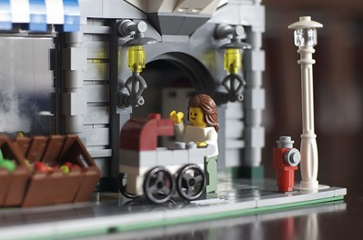

Rediscovering Lego's

Fine. I admit it. I've been playing with Lego's, as an adult, for a full two months. This posting is my final step in saying that I shouldn't be, nor have anything for which to be ashamed. Back in the day I really liked building Lego's. I stopped, for whatever reason, but at some point last year, I started noticing them again. I took the plunge and by the grace of my parents (and brother) reacquired my old Lego's. With a little help, I re-built all my former sets. From the best I can tell, out of the 26+ sets of Lego's I own (which total some 7,000+ pieces), I'm roughly missing about 40 pieces. I'd say that's not too bad for toys that have been in use for so many years.
Although all pieces were originally in one bin, all mixed together, Maria was kind enough to help me separate them into colors, which made building the individual sets easier. Not only did I build all previous sets, but some kind souls have humored me, and given me even newer sets of Lego's, and I admit I'm in love. I knew there had to be some real Lego nuts out there, who would take this whole Lego thing to another level, and internet-ify Lego's, and I wasn't mistaken:- Peeron.com - Basically, a giant inventory system where people have logged the types and number of pieces in any given set.
- PISCL - Peeron Instruction and Catalog Scans Library. Just what the name might lead you to believe. Can't find the set of instructions to an old set you know you own? They probably have the instructions on here, and you can print to your heart's desire.
- BrickLink - Buy and sell Lego parts and sets. This site is especially useful for completing your old sets of Lego's (and getting those 40 pieces I'm missing).
Of all the new sets out there, I'm the most impressed with the Creator Lego's. The standard practice here is two-fold: first, use standard pieces - pieces that aren't going to go out of production once the current big-ticket film leaves the box office. They use the pieces in new ways, and really make some things I never would have thought possible back in the day. Second, provide instructions for people to build 3 completely different models with the same set of Lego's. Previously, they'd give you just one set of instructions, and show pictures of other stuff they had built. Usually this made me jealous, since I couldn't figure out how to build those other things. This way, I can keep building, and the new set of Lego's doesn't get old.
I'll gladly take old Lego's off your hands. If you have some you don't want, just let me know, and I'll happily accept them. I'll either add them to my collection, or meld them into Cecilia's little bucket of Lego's. Who knows if this is just a fad, or if it'll be a a re-found obsession. Either way, I still think they're really cool.
- Prior: Converting Old Video Game Music
- Next: Easter Eggs